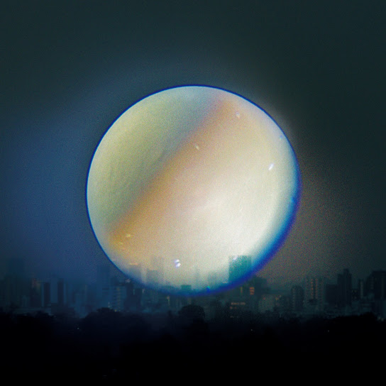

ATARAYO - 差異
사이
(차이)

1st - 極夜において月は語らず
교쿠야니 오이테 츠키와 카타라즈
(극야의 달은 침묵한다)
誰かが言っていた
다레카가 잇테이타
(누군가 말했었지)
「人が死ぬことと遠くへ行って
「히토가 시누 코토토 토-쿠에 잇테
("사람이 죽는 것과 멀리 떠나)
会えなくなることに差異はあるのか｣ と
아에나쿠 나루 코토니 사이와 아루노카」 토
(만날 수 없게 되는 것에 차이가 있는가" 하고)
僕は言えなかった
보쿠와 이에나캇타
(나는 말할 수 없었어)
答えが出なかった
코타에가 데나캇타
(답이 나오지 않았어)
僕ごときじゃ答えが出るような問じゃないのに
보쿠고토키쟈 코타에가 데루 요-나 토이쟈 나이노니
(나 같은 사람에겐 답이 나올 만한 질문이 아닌데도)
走る走る鼓動が走る
하시루 하시루 코도-가 하시루
(달려 달려 고동이 달려)
揺れる揺れる心が揺れる
유레루 유레루 코코로가 유레루
(흔들려 흔들려 마음이 흔들려)
逃げる逃げる君のいない方へ
니게루 니게루 키미노 이나이 호-에
(도망쳐 도망쳐 네가 없는 곳으로)
僕もいつかは散るんだってね
보쿠모 이츠카와 치룬닷테네
(나도 언젠가는 시들 거라지)
壁に向いて咲いていた
카베니 무이테 사이테이타
(벽을 향해 피어있던)
花もいつの日か
하나모 이츠노 히카
(꽃도 언젠가)
日の目を浴びるその日
히노 메오 아비루 소노 히
(햇빛을 쬐는 그날)
その時を待っているんだ
소노 토키오 맛테 이루인다
(그때를 기다리고 있어)
それはまるで僕の
소레와 마루데 보쿠노
(그것은 마치 나를)
生き写しの様で
이키우츠시노 요-데
(산 채로 복사한 듯해서)
可哀想で愛おしくて
카와이소-데 이토-시쿠테
(가엽고 사랑스러워서)
指先でそっと摘み取ったんだ
유비사키데 솟토 츠미톳탄다
(손가락 끝으로 살며시 꺾어냈어)
君が置いていった
키미가 오이테잇타
(네가 두고 간)
手紙は今でも
테가미와 이마데모
(편지는 지금도)
開けられずに
아케라레즈니
(열어보지 못한 채)
机の上でただ僕を見ている
츠쿠에노 우에데 타다 보쿠오 미테 이루
(책상 위에서 그저 나를 보고 있어)
僕は見れなかった
보쿠와 미레나캇타
(나는 볼 수 없었어)
勇気が出なかった
유-키가 데나캇타
(용기가 나지 않았어)
さよならだと答えが出ることに怯えていたんだ
사요나라다토 코타에가 데루 코토니 오비에테 이탄다
(안녕이라고 답이 나올까 봐 두려워하고 있었어)
君はどこかで散ったのかな
키미와 도코카데 칫타노카나
(너는 어딘가에서 시들었을까)
壁に向いて咲いていた
카베니 무이테 사이테이타
(벽을 향해 피어있던)
花もいつの日か
하나모 이츠노 히카
(꽃도 언젠가)
日の目を浴びるその日
히노 메오 아비루 소노 히
(햇빛을 쬐는 그날)
その時を待っているんだ
소노 토키오 맛테 이루인다
(그때를 기다리고 있어)
それはまるで君の
소레와 마루데 키미노
(그것은 마치 너의)
生き様のようで
이키자마노 요-데
(삶의 모습 같아서)
悲しくても愛おしくて
카나시쿠테모 이토-시쿠테
(슬퍼도 사랑스러워서)
指先でそっと摘み取ったんだ
유비사키데 솟토 츠미톳탄다
(손가락 끝으로 살며시 꺾어냈어)
どうせ散ってしまうのなら
도-세 칫테 시마우노나라
(어차피 시들어버릴 거라면)
君の傍では散らないように
키미노 소바데와 치라나이 요-니
(네 곁에서는 시들지 않도록)
枯れてゆくその時間も
카레테 유쿠 소노 지칸모
(시들어가는 그 시간도)
君の瞳には映らないように
키미노 히토미니와 우츠라나이 요-니
(네 눈동자에는 비치지 않도록)
逃げるんだ
니게룬다
(도망칠 거야)
誰かが言っていた
다레카가 잇테이타
(누군가 말했었지)
「人が死ぬことと
「히토가 시누 코토토
("사람이 죽는 것과)
遠くへ行って会えなくなることに
토-쿠에 잇테 아에나쿠 나루 코토니
(멀리 떠나 만날 수 없게 되는 것에)
差異はあるのだ」と
사이와 아루노다」 토
(차이는 있는 것이다" 하고)